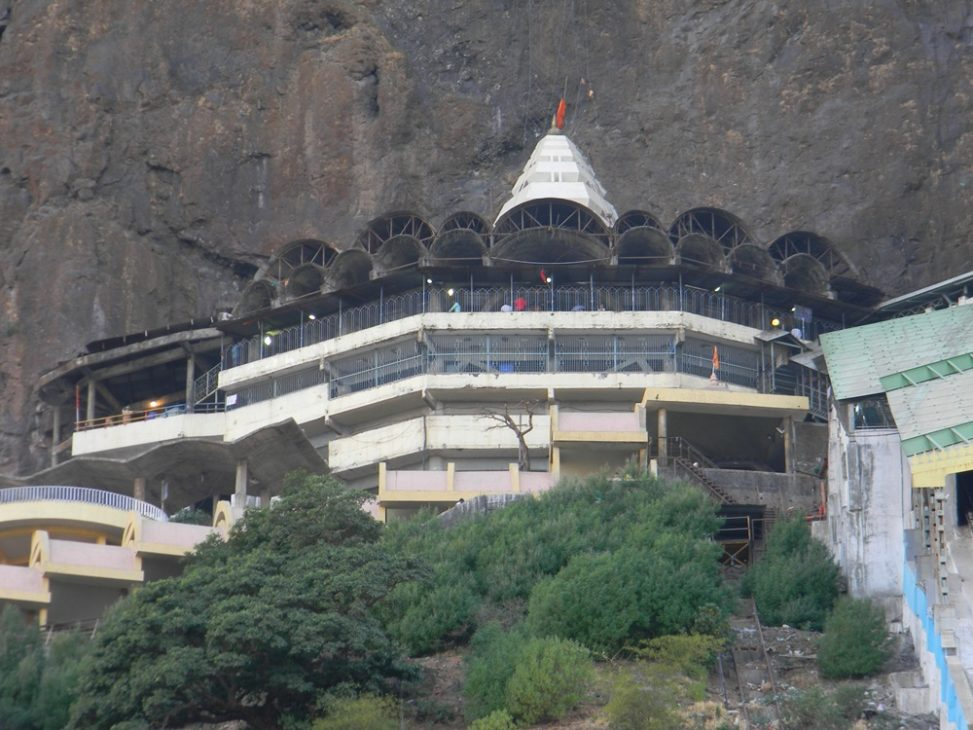
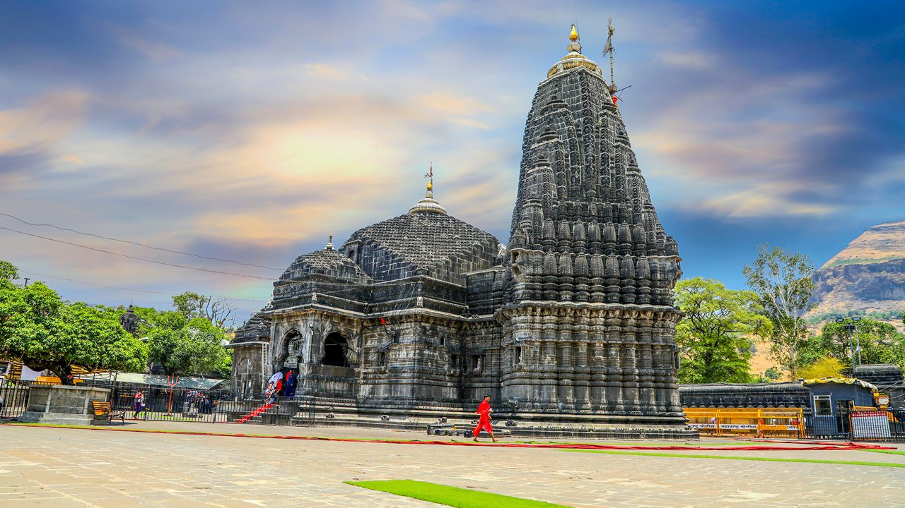
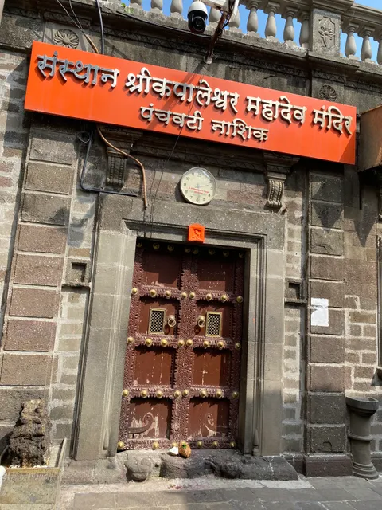
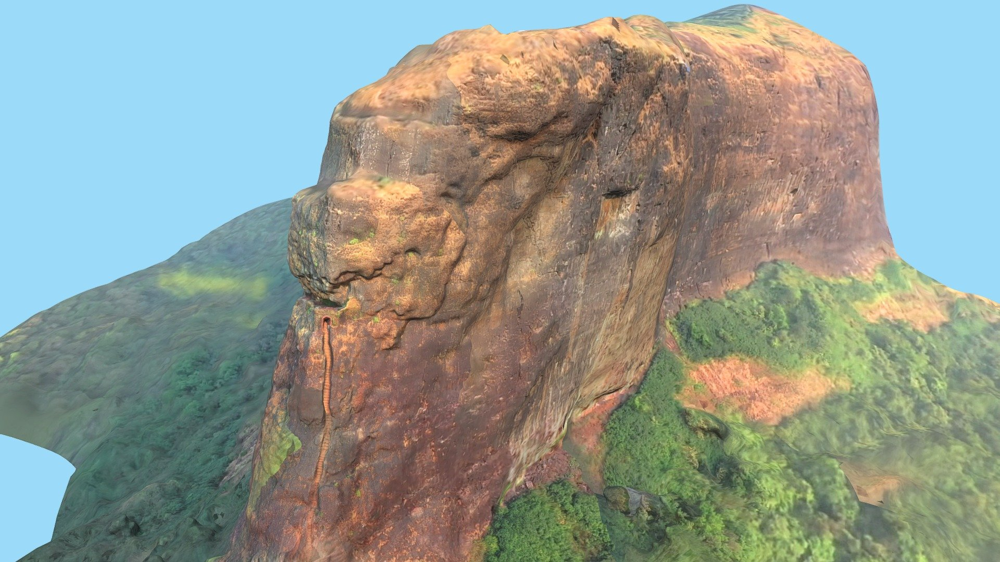

Discover the beauty, culture, and history of Nashik city
Nashik is known for its rich history, educational institutions, and vibrant culture. It offers a perfect mix of tradition and modern lifestyle.
One of the 12 Jyotirlingas of Lord Shiva, famous for its spiritual importance.
A sacred place associated with Ramayana, known for temples and ghats.
India’s most popular winery offering wine tasting and scenic views.
Ancient rock-cut caves with historical carvings and panoramic views.
A trekking destination believed to be the birthplace of Lord Hanuman.
A peaceful picnic spot with beautiful sunset views.
A famous black-stone temple dedicated to Lord Rama.
A stunning waterfall that looks like a stream of milk during monsoon.
A unique marble temple featuring replicas of all 12 Jyotirlingas.
A sacred hill temple dedicated to Goddess Durga with scenic surroundings.
A unique fort famous for its steep rock-cut stairs and thrilling trekking experience.



